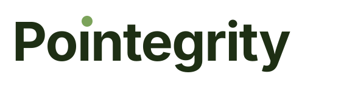
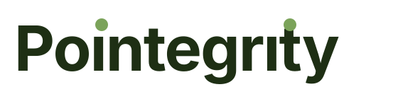
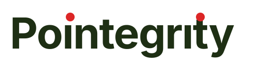

Pointegrity — Logo variants
Draft wordmarks and marks for review. Pick a primary; I can
refine from there. All files live in static/logo/.
ı in the text plus an overlaid
<circle> for the accent dot. Exact horizontal
position of the dot depends on the rendering font; on most
systems Inter is used. If a dot looks 1-2 px off above its stem,
nudge cx in the SVG directly. For print/export, open
in Figma or Inkscape and convert text to paths before
shipping.
Wordmarks — single accent dot
Green accent — canonical
Matches pouch's primary palette. My recommended default.

Red accent
Warmer, more visible. Differentiates Pointegrity from pouch when both brands appear together.

Wordmarks — dots on both i's
Symmetric, emphasizes the point+integrity pun.
Both dots green

Both dots red
Most expressive variant. The two reds carry visual weight.

Monochrome
Ink only — no accent
For fax, print, embroidery, single-color backgrounds.

Standalone Pi mark
Use as favicon, avatar, app icon.
Pi — red dot

Pi — green dot
Composite pattern — Pi · <product>
Template for sub-product branding. Pi on the left identifies the Pointegrity family; the name on the right identifies the product. Adjust to taste when each product gets its own brand identity.
Pi · Pouch

Pi · POI
POI = Project Orientation & Intelligence. Also a recursive nod: "pi" already contains P-O-I.

Context — how it looks in the wild
In navigation (small size)
Mark on dark background
Note: mark currently uses dark ink. For dark-background use, we'd make an inverted version (ink → white).
filter: invert(1) — proof of concept